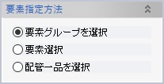
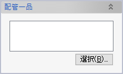
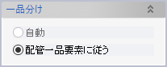

配管一品確認
配管一品を構成する配管要素をチェックし、3Dモデルの表示を見ただけではわからない加工上の指示を表示したり、問題を検出したりします。
- 加工上の指示
- 現合管属性（パイプ端部の仮付け・伸ばし長さ指定）
- 先付け部品
- 検出可能な問題点
- 呼び径の不一致
パイプ要素A上に配置した溶接枝点から別のパイプ要素Bを伸ばした場合、実際の流れの方向とは関係なく、Aが本管、Bが枝管とみなされ、AよりもBが太いと「呼び径の不一致」として検出されます。
- フランジの呼び圧力の不一致
- 曲げ加工つかみ代の不足
- 配管一品要素の名称の重複
- 呼び径の不一致
操作方法
チェック対象の配管要素を指定します。通常、配管一品分けコマンドで作成した配管一品要素を選択しますが、一品分けをする前でもシステムの自動一品分け機能を利用してチェックが可能です。
OKをクリックすると、検出された加工指示や問題点が表示されます。
パラメーター
- 要素指定方法

チェック対象要素の選択方法を指定します。
- 要素グループを選択
- 選択した要素グループに含まれる全ての配管要素を対象とします。

- 要素選択
- 選択リストボックスが表示され、任意の配管要素を選択できます。
- 配管一品を選択
- 配管一品選択ダイアログが表示されます。「選択」ボタンをクリックして配管一品要素を選択してください。

- 一品分け

一品分けしていない（配管一品要素に属していない）配管要素を選択する場合は「自動」を選択してください。すると、コンテキストメニューで「一品単位でパイプを選択」した場合と同じように、システムが自動的に一品分けしてチェックを実行します。
- パイプベンダー

ベンダー設定を選択します。
ベンダー設定を変更する際には設定ファイルを書き換えます。